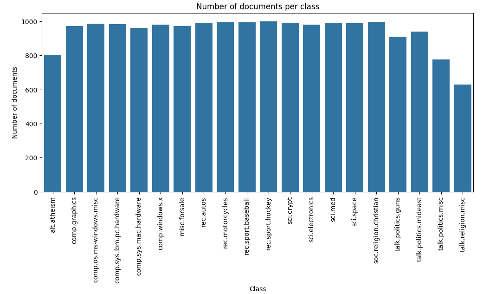
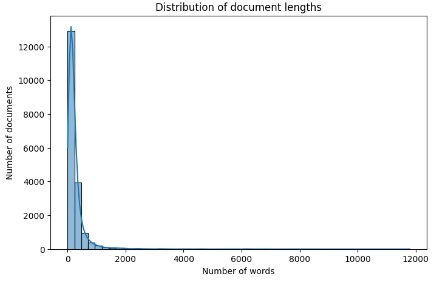
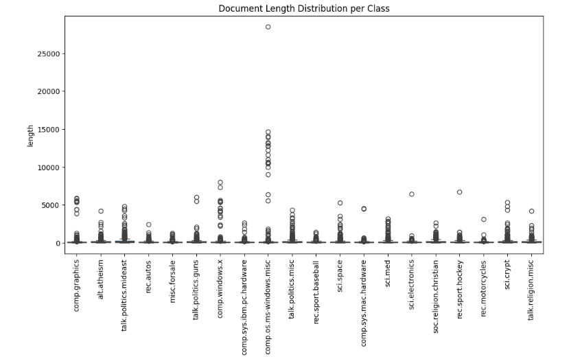
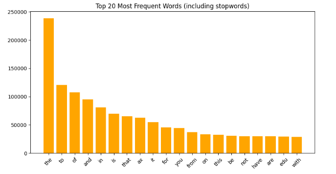
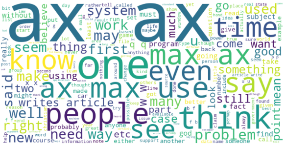

1. Exploratory Data Analysis
Dataset Overview
20 Newsgroups dataset contains text posts from 20 different newsgroups. Each record includes the text of a post and its corresponding category label.
- 18,846 instances
- 20 category labels (e.g.,
comp.graphics,rec.sport.hockey, etc.) - Data type: text (
raw text of posts) - Target: category label (
0-19)
Category Distribution
The dataset is relatively balanced, with no label overwhelmingly dominating the others.

Document Length Distribution
The document lengths are highly variable, with many short posts and a few extremely long ones, resulting in a right-skewed distribution.


Frequent Words
The chart shows the 20 most frequent words in the dataset including stop words. Most of these are common words like the, to, of, which carry little semantic meaning for classification.


2. Data Preprocessing
Tokenization & Stop Words:
Token: the way text is split into tokens (
word,char)Stop Words: removal of stop words can be enabled or disabled (
True/False).
N-grams
The n-gram range can be changed, e.g., (1,1) for unigrams, (1,2) for unigrams + bigrams, (1,3) for unigrams + bigrams + trigrams.
Vectorizer:
Can choose between TF-IDF or Bag-of-Words (
CountVectorizer)Maximum features: limit the vocabulary size, e.g.,
5000,10000
3. Models
Machine Learning Models: Logistic Regression, Support Vector Machine (SVM), Random Forest, Decision Tree, K-Nearest Neighbor (KNN), Multinomial Naive Bayes
Deep Learning Models:
TextCNN: fast and simple baseline for text classification.
BiLSTM: provides a good balance between performance and complexity.
CNN + BiLSTM: slightly heavier combination
Transformer Fine-tuning: uses contextual embeddings and transformer tokenizer.
Metrics: F1-Score
Support Vector Machine with TF-IDF achieved the highest F1-score
(~0.88)compared to the other ML models.TF-IDF usually achieves higher F1 scores compared to using Bag-of-Words.
DistilBERT Fine-tuning achieved (
~0.92) test accuracy with balanced precision, recall, and F1, demonstrating the effectiveness of contextual embeddings for text classification.Fine-tuning transformer models generally outperforms traditional ML or simple deep learning models when sufficient data and preprocessing are applied.
4. Conclusion
- Traditional vectorization methods like Bag-of-Words and TF-IDF provide baselines, with TF-IDF generally yielding higher F1 scores.
- Deep learning models such as TextCNN, BiLSTM, and CNN+BiLSTM improve performance by capturing sequential and contextual information from text, especially when combined with static embeddings.
- Transformer-based models (e.g., DistilBERT) achieve the highest performance, demonstrating the advantage of contextual embeddings and fine-tuning on downstream tasks.